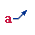
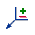

Alignment Shape Properties dialog box (Annotations tab)
Identifies the types of annotations that you want to control with the alignment shape created by the Annotation Alignment Shape command.
Specifies that balloon annotations and auto-balloons generated for items in a parts list are aligned to the alignment shape.
A parts list does not have to exist on the sheet.
For all balloons with shapes, the center point of the balloon is used to align it. For underline balloons, the connection point of the leader or break line is used to align the balloon. Stacked balloons are aligned using the connection point of the first (base) balloon.

Specifies that callout annotations are aligned to the alignment shape.
If the callout is left-justified or right-justified, then the connection point of the leader or break line is used as the alignment point. If the callout is center-justified, then the center point of the first line is used as the alignment point.
Specifies that weld symbol annotations are aligned to the alignment shape. The point where the leader connects to the weld symbol is used to align it.
Specifies that surface texture symbol annotations are aligned to the alignment shape.
The point where the leader connects to the surface texture symbol is used to align it. If the symbol is attached to the geometry directly, then the surface text symbol does not honor the alignment shape.
Specifies that datum target symbol annotations are aligned to the alignment shape.
The center point of the circle is used to align the datum target.
Specifies that feature control frame symbol annotations are aligned to the alignment shape.
The connection point of the leader or break line is used to align the feature control frame.

Specifies that edge condition symbol annotations are aligned to the alignment shape.
The tail point of the edge condition symbol is used to align it.
How do I
Align annotations using the Annotation Alignment Shape commandManage annotations that are associated with an alignment shape
Learn more
Arranging annotations using alignment shapesModifying alignment shapes to rearrange annotations
Look up more details
Annotation Alignment Shape commandShow/Hide Annotation Alignment Shape command
Annotation Alignment Shape command bar
Alignment Shape Properties dialog box
Alignment Shape Properties dialog box (General tab)